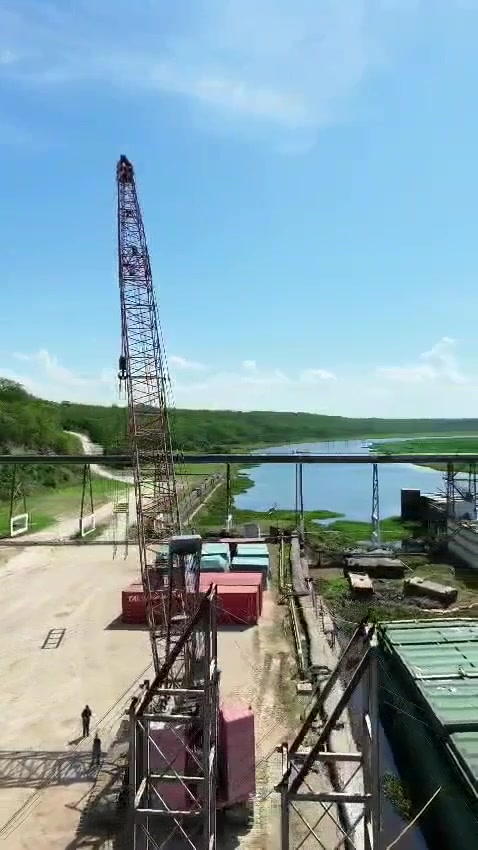
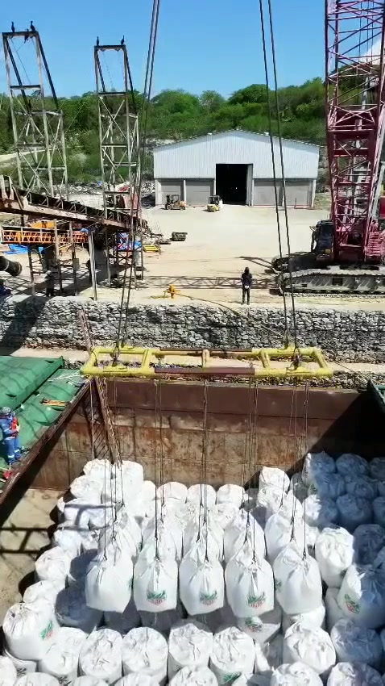
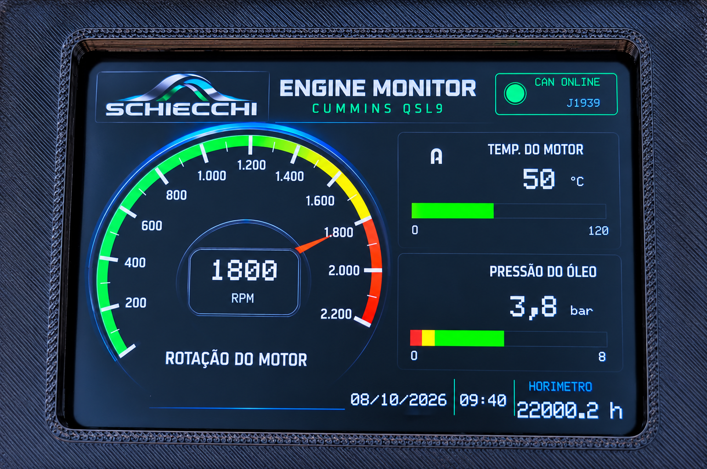
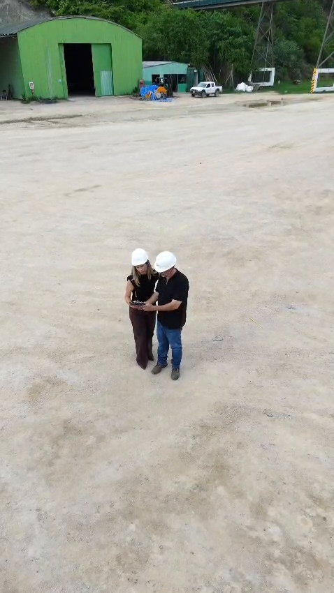

CASO REAL | BOLÍVIA
NUTRIOIL — TEREX HC250
TECNOLOGIA CONSTRUÍDA
NO MUNDO REAL.
Uma operação fora do Brasil. Uma máquina com necessidades específicas.
Na Bolívia, o trabalho realizado na Terex HC250 reuniu experiência técnica, diagnóstico e desenvolvimento de soluções criadas a partir das necessidades encontradas na própria operação.
REGISTROS DA OPERAÇÃO
O TRABALHO EM CAMPO.



DESENVOLVIMENTO EM CAMPO
O INÍCIO DO SCHIECCHI GATEWAY.
Entre as tecnologias aplicadas nessa operação estava uma das primeiras versões funcionais do que se tornaria o SCHIECCHI GATEWAY.
Ainda em uma caixa simples e sem a aparência do produto atual, naquele momento o objetivo principal era validar a tecnologia em uma operação real.
Essa primeira geração abriu caminho para a evolução do GATEWAY até o equipamento atual, com identidade própria, painel touch e desenvolvimento voltado à utilização comercial.

SCHIECCHI GATEWAY · DIAGNÓSTICO ELETRÔNICO REMOTO
DIAGNÓSTICO SEM FRONTEIRAS.
Com a máquina na Bolívia e os recursos de diagnóstico no Brasil, o SCHIECCHI GATEWAY permitiu o acesso remoto aos sistemas eletrônicos da HC250 para acompanhamento de parâmetros e realização de procedimentos de diagnóstico.
TECNOLOGIA QUE TRABALHA COM VOCÊ.

MONITORAMENTO DO MOTOR CUMMINS

UMA NECESSIDADE.
UMA NOVA SOLUÇÃO.
Durante a operação foi identificada a necessidade de disponibilizar ao operador informações essenciais do motor, especialmente a rotação.
A partir dessa necessidade, a SCHIECCHI desenvolveu um painel dedicado para o Cummins QSL9, permitindo o acompanhamento de parâmetros importantes durante o funcionamento da máquina.
Nesse equipamento, 1.800 RPM é o limite estabelecido para a operação. Quando esse limite é ultrapassado, o sistema de proteção da bomba entra em modo de emergência e reduz a rotação do motor para marcha lenta.
SCHIECCHI GATEWAY: acesso e diagnóstico remoto. • Painel Cummins QSL9: monitoramento do motor durante a operação.
REGISTRO REAL
EQUIPAMENTO EM OPERAÇÃO.
Registro realizado após os trabalhos e a instalação do SCHIECCHI GATEWAY.
PESSOAS POR TRÁS DA TECNOLOGIA
TECNOLOGIA TAMBÉM É FEITA DE PESSOAS.
Por trás das máquinas, softwares e equipamentos existe uma história construída por pessoas.
A SCHIECCHI é uma empresa familiar, resultado de anos de trabalho, parceria, experiência e desenvolvimento conjunto.
Diferentes conhecimentos trabalhando na mesma direção — da experiência prática à eletrônica, conectividade e programação.

SCHIECCHI
DA NECESSIDADE À SOLUÇÃO.
DA SOLUÇÃO À EVOLUÇÃO.
TECNOLOGIA QUE TRABALHA COM VOCÊ.
FALE COM A SCHIECCHI